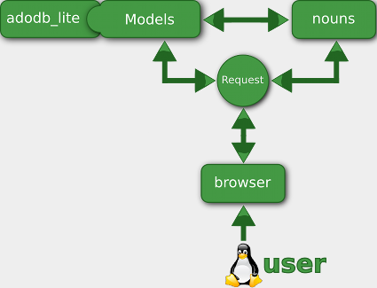
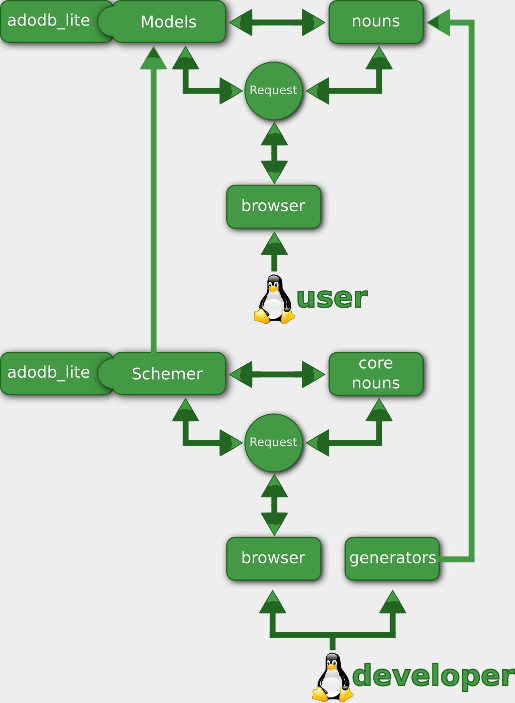

There are many frameworks and content management systems out there in the rampaging wilderness from Ruby on Rails to Wordpress. I'm not trying to equate the two. One is a Ruby Web Development framework, and the other is a PHP blog content manager. My point is that there is a lot out there to help you get stuff done. Most frameworks have the idea that we need to use an MVC (model, view, controller) architecture, or that we should use a template language. In some way or another, they feel they need to integrally change the way we get stuff done. I didn't want to change it as much as I wanted to do it more efficiently.
Before I explain what components there are and how they interact, let me take a minute to outline some of the driving principles of StarbugPHP.
Abstract when necessary. Be direct. After carefull thought, StarbugPHP was built around the HTTP Request.
Use them as you always do. No template languages. Use generators to help you generate some. If you're dying to be able to write HTML with speed and style, use an editor like geany with its fancy auto-complete snippets.
Define your models in one place and have other parts of the application take that and define your tables, write your model, and generate some CRUD.
The main object in Starbug is the Request. After all, what we're dealing with are HTTP requests. You don't need to edit the Request or extend it, but it controls a few things.
In the running application, your data is represented my models, such as article, post, or event. These are fairly straight forward and extend from the Table class. The Table is simply a wrapper for adodb_lite.
Going back to HTTP, a URI identifies a resource. The nouns are like the actual resources. They are just php files with php and XHTML. They're what the Request is responsible for locating.
here is how it breaks down when you're using a website built with starbug:
The core application is a set of nouns that make up the administrative areas. You'll use these to 'model' your models. Hence the meta content manager.
The Schemer sits between the core application and adodb_lite to take care of structural modifications to the db.
There are various generators, for generating models, forms and CRUD (create, read, update, delete) albeit in the form of CLUS (pronounced 'clues')(create, list, update, show). The Schemer will automatically use the model generator when you activate a model. With a model activated, you can generate CLUS from the command line.
So here's how it looks when we tie in development:
| Key | Possible values | Default |
|---|---|---|
| type | int, string, datetime, timestamp | none(required) |
| length | (int max_length), (int min_length):(int max_length) | type dependant |
| input_type | text, textarea, hidden, select, date_select, time_select | text |